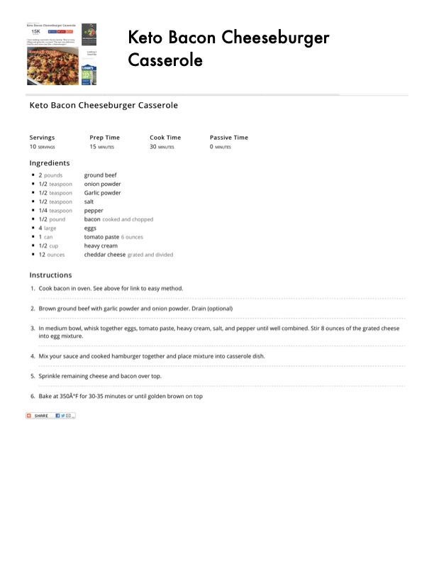

Keto Bacon Cheeseburger Casserole

Original cookbook page 12
A hearty, low-carb casserole that combines all the classic cheeseburger flavors with crispy bacon in an easy one-dish meal.
Prep: 15 minutes • Cook: 30 minutes • Total: 45 minutes
Ingredients
- 2 pounds ground beef
- 1/2 teaspoon onion powder
- 1/2 teaspoon garlic powder
- 1/2 teaspoon salt
- 1/4 teaspoon pepper
- 1/2 pound bacon, cooked and chopped
- 4 large eggs
- 1 can (6 ounces) tomato paste
- 1/2 cup heavy cream
- 12 ounces cheddar cheese, grated and divided
Instructions
- Cook bacon in oven using your preferred method.
- Brown ground beef with garlic powder and onion powder. Drain if desired.
- In medium bowl, whisk together eggs, tomato paste, heavy cream, salt, and pepper until well combined. Stir 8 ounces of the grated cheese into egg mixture.
- Mix the sauce and cooked hamburger together and place mixture into casserole dish.
- Sprinkle remaining cheese and bacon over top.
- Bake at 350°F for 30-35 minutes or until golden brown on top.
Recipe #12 from collection